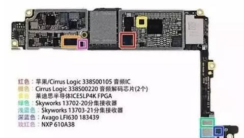
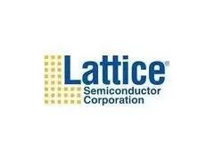
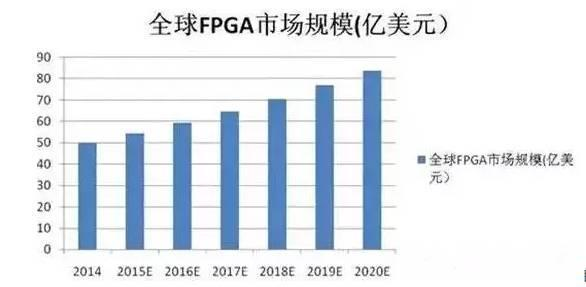

使用小程序
iPhone 7 Plus最近火了，拆解图片及解说报告迅速占领了全世界的科技媒体。在这份拆解报告中，我们惊奇地发现了一个新成员——FPGA。

iPhone 7 Plus的主板集成了一颗非常小的FPGA，尺寸为2mmx2mm。这颗芯片正是Lattice公司在几年前推出的iCE40的低密度低功耗小封装FPGA，型号为iCE5LP4K，密度为3.5K LUT-4等效逻辑资源。其周围器件包括音频CODEC、音频放大器、分集接收器加上其背面的大气压力传感器、NFC控制器、WIFI/蓝牙等控制器。
经过某些技术人士的猜测，这颗FPGA放在这里所实现的功能，可能是Sensor HUB的功能，就是将多种传感器汇聚预处理（可能包含总线控制、总线转换、时分复用、接口转换等功能模块），在必要的时候再与主处理器CPU进行数据交互和进一步的运算，减少主处理器CPU相关模块的监控及运算频度，从而降低功耗、提升处理性能。
当然也有另外一些技术人士对此有不同意见，他们认为这颗FPGA的主要作用是用于USB Type C的控制，目前由于标准等原因，还没有ASSP厂商提供完整的解决方案，而Lattice利用FPGA的特性，率先成为USB Type C供应商之一。这也是FPGA相比较ASSP的优势，既加快上市周期，帮助客户节约时间成本。当然在苹果或者Lattice公开设计意图之前，这些都只是猜测。
Lattice的FPGA器件之前从未进入过苹果的供应链，这次是破天荒的第一次，也是苹果首次在iPhone中引入FPGA器件，Why？按照常识，以苹果年销售1亿部iPhone的规模，如果要尽可能地降低成本，应该尽可能采用ASIC芯片，以往的传统是FPGA通常只被用在低量市场，所以这次苹果的设计着实引起了大家的兴趣。
多年以前，三星Galaxy S4及S5曾经也率先采用过Lattice的同款FPGA器件，而当时的主要应用方向是用于红外识别和二维码识别，但是在S5以后的Galaxy型号中，三星用别的方案替代了FPGA，所以并未引起业界的震动，但是苹果用FPGA的意义还是大大不同的。
苹果iPhone7这次采用FPGA方案在智能手机行业树立了一个标杆，这也意味着FPGA这一冷门器件第一次这么显眼地出现在消费电子市场，赢得大家的广泛关注，而这种情况在多年以前是完全不可能的。至少我们可以得到一个浅显的结论：可能今后有无集成FPGA会成为区分高端智能手机的分水岭，或许在今后我们会发现更多的消费品电子会应用到FPGA。这对FPGA行业应该是一个很好的消息。

此次苹果使用的Lattice芯片，属于ICE系列。2012年，Lattice发布了市场上首款针对移动应用领域的FPGA iCE40，至于iCE产品的命名，则与产品的特色一致，那就是低功耗像冰一样。在Lattice推出iCE之前，消费类市场占其总营收的不足5%,而现在消费类已经接近30%的销售额，这一切都应归功于全新的市场应用。
随着手持市场技术的快速演进，很多功能由于尚在试验期，没有相应的协议与稳定的市场，ASSP厂商不愿意去开发，因此在这半年到一年的窗口期内，FPGA可以帮助客户解决过渡期的问题。Lattice用“万金油”来比喻iCE系列，寓意为最灵活的可穿戴器件。另外FPGA可以帮助客户节约调试时间，因为ASSP一旦出现bug，客户只能等待下一批产品，FPGA则可以随时修改，缩短了开发周期。
2015年Lattice推出了面向中档手机及可穿戴设备的iCE40 UltraLite，顾名思义其实是iCE40 Ultra的简化版，不过配置并未因此缩水，最大的变化只是存储空间减少，逻辑单元由1k/2k/3k缩小至0.64k与1.2k，客户可以针对自己的应用自主选择。比如手环或中端手机，就可以考虑UltraLite同时实现低功耗、差异化和低价格的产品设计。封装尺寸小至 1.4x1.4x0.45mm，相比竞争对手的产品尺寸减小60%；功耗仅为35uA，相比对手低30%；同时拥有最高硬件集成度。
iCE系列针对的应用范围包括：可穿戴设备、计步器、永远在线的导航、语音输入、LED呼吸效果、日程提醒、活动监测、红外控制、用户识别等。同时，UltraLite也支持多款工业应用，包括手持工具、POS等传统工业应用，也包括便携式血压计等手持医疗设备，牙科、胃镜等体内医疗应用亦可采用。

FPGA号称“万能芯片”，从技术角度讲，它是可编程的产品，在不改变芯片本身硬件组成的情况下可反复使用。根据市场变化，在同样载体上实现不同功能。听起来很美好，但研发起来很困难，能做FPGA器件的厂商一定是大牛中的大牛，因为像英特尔(Intel)、德州仪器(TI)这样的半导体巨头也曾尝试进入这个市场，但都因为这样那样的原因铩羽而归。目前，全球范围内能够量产FPGA的企业屈指可数，Xilinx、Altera、Lattice和Microsemi都是大家耳熟能详的美国企业。
FPGA是专用集成电路（ASIC）领域中的一种半定制电路，其优点包括可以快速成品、可被修改、可改正程序中的错误和更便宜的造价等。工程师对FPGA内部的逻辑模块和I/O模块重新配置，就可以实现想要的逻辑。FPGA还具有静态可重复编程和动态在系统重构的特性，使得硬件的功能可以像软件一样通过编程来修改。FPGA能完成任何数字器件的功能，甚至是高性能CPU都可以用FPGA来实现。FPGA如同一张白纸：加电时，FPGA芯片将EPROM中数据读入片内编程RAM中，配置完成后进入工作状态；掉电后，FPGA恢复成白片，内部逻辑关系消失，因此FPGA能够反复使用。使用FPGA来开发数字电路，可以大大缩短设计时间，减少PCB印刷电路板的面积，提高系统的可靠性。在FPGA内置入硬核CPU或软核CPU，既能实现数字逻辑又能适应嵌入式开发。
2014年，全球FPGA市场总规模达到50亿美金，其中，中国的市场份额有近17亿美金，中国市场占全球市场的三分之一。分析机构预计2015年至2020年全球FPGA市场的年复合增长率为9%，到2020年，全球FPGA市场规模将达84亿美金。目前FPGA正处于一个加速增长的市场势态中，增长幅度远大于其他芯片市场；同时，FPGA行业平均毛利可观，据市场数据分析表明其行业平均毛利大于60%。FPGA行业也需要更大的市场规模，以吸引更多的使用者。预计随着FPGA产量逐步增加，成本的进一步降低，其市场份额将会持续增大。
目前FPGA的主要应用领域是通讯、工控、国防、消费，近年来FPGA最引人关注的变化趋势之一就是应用领域不断拓展。
在FPGA传统应用市场方面，通信逐步实现高速、复杂协议，消费电子应用则注重低功耗、低成本。此外，FPGA还广泛应用于医疗电子、安防、视频、工业自动化、语音网络、半导体制造设备以及家电等领域。FPGA在工业中的应用主要涉及四大领域，分别是马达控制、工业网络、机器视觉和机器人控制。以马达控制为例，重点是需要降低噪音、减少震动 、降低 EMI，同时获得更高的控制精度和减少能源消耗等。
目前在全球市场中，Xilinx、Altera两大公司对FPGA的技术与市场仍然占据绝对垄断地位。两家公司占有将近90%市场份额，专利达6000余项之多；剩余市场份额主要被Lattice和Microsemi所占有，这两家的专利也达3000多项。2014年Xilinx、Altera两大公司营收分别为23.8亿美元和19.3亿美元；而2014年Lattice和Microsemi（仅FPGA部分）两公司营收为3.66亿美元和2.75亿美元。这前四大FPGA市场领先者几乎垄断了FPGA的市场份额。
FPGA市场前景诱人，但是门槛之高在芯片行业里无出其右。全球有60多家公司先后斥资数十亿美元，前赴后继地尝试登顶FPGA高地，其中不乏英特尔、IBM、德州仪器、摩托罗拉、飞利浦、东芝、三星这样的行业巨鳄，但是最终登顶成功的只有位于美国硅谷的四家公司-Xilinx、 Altera、Lattice、Microsemi。上述4家公司手握9000余项专利，如此之多的技术专利构成的技术壁垒当然高不可攀。
随着智能化市场需求变化越来越快，定制芯片 (SoC asic) 项目巨减趋势已不可逆。采用ASIC方案的投资量大幅增加，周期长, 市场风险大幅加大。而相对来说FPGA技术正逐渐在向主流迈进。
FPGA 拥有并行计算优势，在高性能、多通道领域可以代替部分ASIC 和DSP，FPGA 的并行计算在多通道处理方面可以对传统的ASIC 方案进行优化。 以5 万片流片为临界点，FPGA 在高价值、批量相对较小、多通道计算的专用设备（如雷达、航天飞机、路由器）有取代ASIC 的趋势，这将是Xilinx固守的地盘。
FPGA 开发周期比ASIC 低55%，可以用来快速抢占市场。这也许是Lattice在批量较大的消费电子市场最重要的胜负手。
而Intel治下Altera FPGA的终极目标，应该是利用其在高性能低功耗及在深度学习的优势，最终融入CPU技术中，成就异构计算数据中心的明天。
从资本市场来看，之前紫光集团刚刚完成对Lattice的少量入股行为，Lattice（LSCC）目前在纳斯达克上市，总市值不超过8亿美元，相比Altera167亿美元的收购价，这样的体量不失为一个理想的收购目标，全球的FPGA企业一共也只有这4个标旳（Xilinx、Altera、Lattice和Microsemi），Intel已经买下Altera，Xilinx作为行业老大暂时不大会卖，而剩余的两个稀缺标旳卖掉一个少一个。趁着进入iPhone7供应链的东风，不知道Lattice今年会不会市值暴涨，成为大佬们争夺的目标。不过看起来美国政府多半不会批准中国公司收购这么关键技术的敏感公司，所以中国本土的FPGA企业一定要快马加鞭，争取早日实现替代进口，这样方能摆脱受制于人的局面。
信息部/吴心成